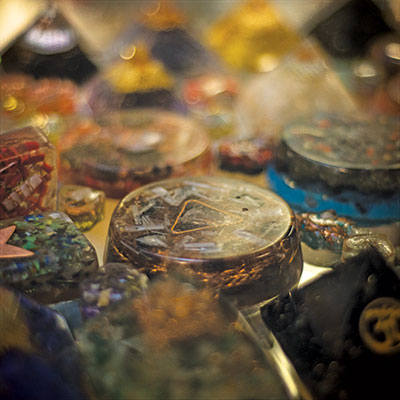

In the cards
Exploring alt-spirituality in Tulsa

Joseph Rushmore
The year 2019 has marked new and alarming milestones for humanity and the world, and the millennial generation doesn’t know where to turn in these trying times of climate change, ICE raids, political scandal and social media-induced ennui.
Beyond the heaviness of grand-scale events outside of our individual control is the desire to grasp something tangible and gain a sense of power over the events of our own lives. Should we take the job we love and live with less, or go for the soul-crushing, high-salaried job in hopes of someday buying that house and the occasional avocado toast? Will we ever find love, get married and get grandma off our ass? Should we, the conscious collective, end it all now, sell all our possessions and move to Thailand to teach English, or is there something our current challenge is trying to teach us, spiritually, that we’re missing?
Clearly, we’re looking to find the answer—the psychic services industry is worth $2 billion, growing steadily at 2 percent each year and becoming synonymous with wellness. No wonder the creators of the Motherpeace Tarot deck, a deck created almost 50 years ago, saw a 268 percent increase in sales in 2018. We’re charging our crystals, calculating our birth charts and looking for the answers in the cards.
Trends and Traditions
“My theory is that there’s truth in all forms of faith,” said Teresa Rose Hunt as we sat down to talk at her metaphysical shop, Spiritual Rose, in Midtown. We discussed her journey of becoming a fixture in Tulsa’s tarot and psychic scene over a few old decks of tarot cards topped with a clear crystal called Selenite for cleansing and protection. Teresa has been practicing magic, offering intuitive services and reading tarot for more than 30 years and has the wisdom to show for it: “You just have to look past the human ego we place in [that faith] to get to the truths.”
 Hunt’s store is neatly organized with bins of tumbled and natural crystals, shelves of tarot decks, moon elixirs, holy water and potions. It contains ubiquitous beauty products like bath bombs and lotions among stacks of spell books and “tarot bibles,” and in the middle of the store is a room where Hunt offers tarot readings, palmistry readings, psychic readings, reiki healings, Akashic healing and more.
Hunt’s store is neatly organized with bins of tumbled and natural crystals, shelves of tarot decks, moon elixirs, holy water and potions. It contains ubiquitous beauty products like bath bombs and lotions among stacks of spell books and “tarot bibles,” and in the middle of the store is a room where Hunt offers tarot readings, palmistry readings, psychic readings, reiki healings, Akashic healing and more.
I ask her about the cultural moment these alt-spiritual practices are currently having. Tarot is practically mainstream, and one need only peruse Goop.com’s selection of “love potions” to see capitalism’s hold or search through any number of astrology and divination-dedicated Instagram accounts to discover the depth of impact this witchy zeitgeist has on the millennial generation.
“There is that new-age trendiness to it, but I feel like that’s just getting them in the door,” Hunt said. “And once they start educating themselves and talking to some of us old crones, they realize there’s so much more to it, something so much deeper. It’s one of the most open-hearted, open-minded and loving groups of people you will ever meet. We care about the earth. We care about each other. We care about the planet, the solar system, everything. And we know that you’re just as valuable as I am, and we honor that.”
‘You’ll Believe [Godexx] is a Woman’
Cartomancy, or divination with cards, found its roots in 14th century Europe. Historians believe the tarot originated in Islamic societies and was not used for divination, but simply as a deck of playing cards. It wasn’t until the 1700s that occult followers in England and France discovered the cards and adopted them as a divination tool. The Rider Waite Tarot Deck—which is considered by many to be the so-called “ur-deck” and uses cis-gendered archetypes which include kings, queens, priests, and priestesses—was first published in 1909. Today, there are as many different decks as there are tarot readers: decks that are inclusive; decks that use animals; decks that do not use living creatures in their depictions at all.
Though interest in alternative forms of spirituality are on the rise with many people exploring ancient pagan traditions of the world, the tarot, witchcraft, Wicca, astrology and other “New Age” spaces, there is skepticism in equal measure. This insistence on a strict adherence to rationality, science or patriarchal religion, it can be argued, is just that: patriarchal.
Indeed, women are twice as likely to seek psychic services as men. While the “witchy” movement is a space occupied by all genders and all kinds of people, those leading the way in its current resurgence are women, queer people, and those beyond the binary. As Sady Doyle of The Guardian puts it, “Embracing the witchiness, deciding you can know something about your life by looking at tarot cards and listening to your hunches, or trying to affect a situation by focusing your will on it, might be just a process by which women can come to trust themselves.” And that concept leaves the powers-that-be nervous.
 Tulsa artist, teacher and tarot reader Katy Bruce echoes Doyle’s sentiment. “A lot of people have been oppressed for a long time, and we’re trying to figure out how to liberate ourselves and each other,” she said on her way to pop up at an art market. Her business, which she runs via her Instagram @prism_portal and by teaching tarot and jewelry-making community classes and giving readings, is centered on the tarot-inspired jewelry she creates.
Tulsa artist, teacher and tarot reader Katy Bruce echoes Doyle’s sentiment. “A lot of people have been oppressed for a long time, and we’re trying to figure out how to liberate ourselves and each other,” she said on her way to pop up at an art market. Her business, which she runs via her Instagram @prism_portal and by teaching tarot and jewelry-making community classes and giving readings, is centered on the tarot-inspired jewelry she creates.
“I feel like that goes hand-in-hand with tarot because it gives us the power to have our connection with god or the higher being,” Bruce said. “We don’t have to go through the church. We don’t have to go through the patriarchal structures. We can have the direct connection. It’s empowering the sacred feminine and the different sacred spiritual energies and integrating them further into our society, which I think is necessary to get to the more balanced, matriarchal-type of society.”
Bruce went on to explain that the tarot is inclusive to all genders, a yin-yang if you will; it includes the masculine and feminine energies that make up every living person. The cards are a tool to help us to connect with those energies within us at any given time.
A Community for All
A lifelong Californian, Vedic astrologer Lynn Bootes moved to Tulsa with her husband, an Oklahoma native, eight years ago. She found her new spiritual community here through Peace of Mind bookstore, where she regularly offers astrological readings to clients.
“I’m not surprised that there’s more interest [in alternative forms of spirituality] because we’re facing a lot of existential crises,” she said. “In the last year or so, we have been in a phase where most of the visible planets have been in one part of the sky… and when that happens, I call it the ‘Spin Cycle Out-of-Balance Phenomenon’—like when you wash a heavy, old rug in the washing machine and, in this process, it ends up loudly ‘thunking’ during its spin-cycle. It’s a loud, painful-sounding, and awkward moment in the process of becoming clean.”
Whatever the planets’ current alignment means for us in this moment, the community in Tulsa is here to offer spiritual support. Lynn re-settled in Tulsa eight years ago, a decision that was obvious to her after finding the community here so vibrant.
“There’s an awful lot going on and it’s way bigger than people think it is,” she said. “People say, ‘Oh, well this is the Bible Belt,’ but it’s fascinating, the strength of the undercurrent of alternative spirituality in Tulsa.”
.jpg)
.jpg)